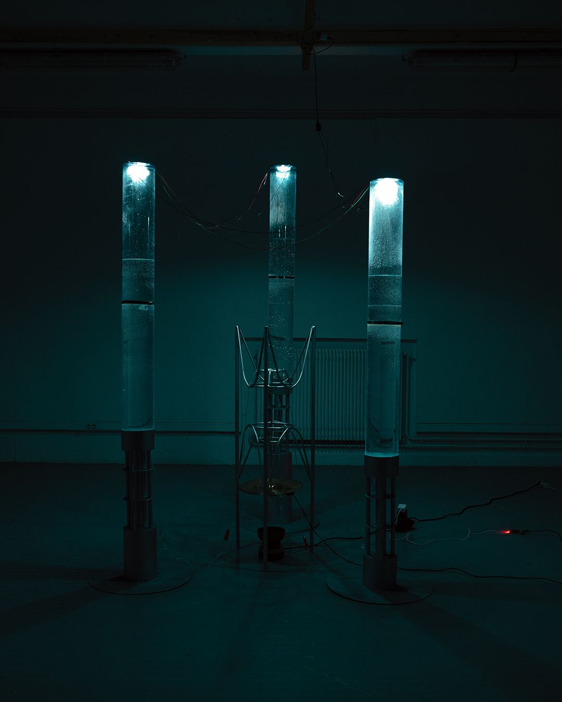
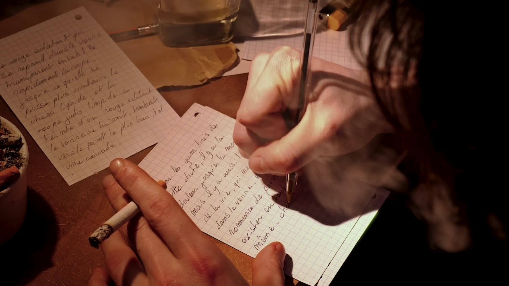
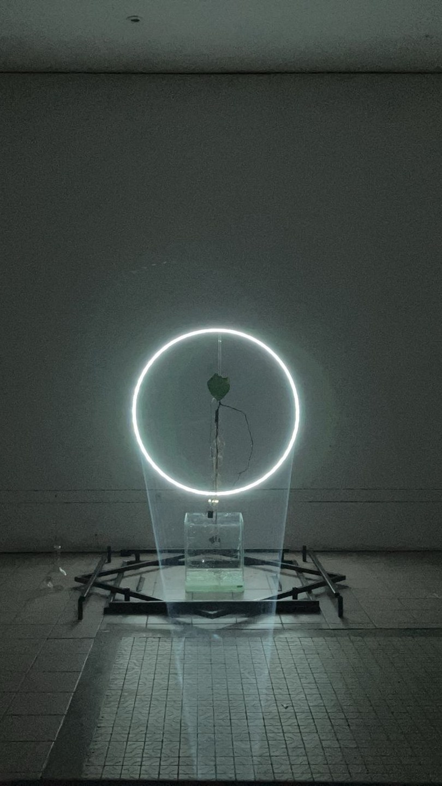
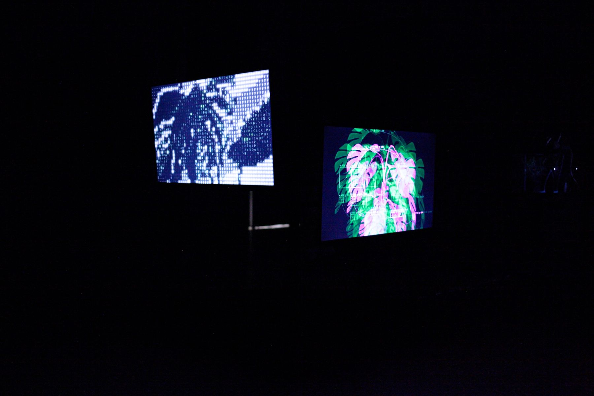

PRÉNOMNOM
[ Deux ou trois lignes qui disent ce que fait l'artiste, en une seule idée. C'est la phrase qu'on lit si on ne lit rien d'autre. ]
[ Le parcours : formation, où et comment la pratique s'est formée, ce qu'elle cherche. Quatre à six lignes. ]
[ Ce sur quoi l'artiste travaille en ce moment, et les projets à venir. Trois à cinq lignes. ]
![[ Description de l'image ]](../images/travaux/collectif/babosphere-11.jpg)



![[ Description de l'image ]](../images/travaux/collectif/babosphere-08.jpg)
